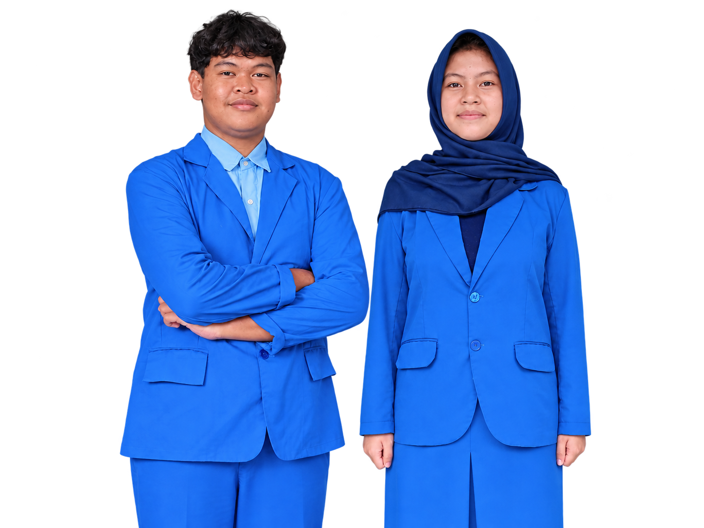

Deskripsi Seragam
Seragam ini memiliki desain yang formal, elegan, dan profesional dengan dominasi warna biru royal yang dipadukan dengan hijab berwarna biru navy. Bagian atas berupa kemeja berwarna biru muda yang dibalut oleh blazer berlengan panjang dengan dua kancing serta dua saku di bagian depan. Blazer dipadukan dengan rok panjang berwarna biru senada sehingga menciptakan tampilan yang serasi dan rapi. Kombinasi warna biru memberikan kesan berwibawa, percaya diri, dan modern. Secara keseluruhan, seragam ini mencerminkan identitas yang profesional, sopan, dan elegan.